Martial arts is not just about fighting but about self-discipline and growth. It builds physical strength and mental toughness. It teaches patience and control over emotions. Students develop confidence and leadership skills. Training improves flexibility and stamina. It promotes respect for teachers and peers. It enhances focus and concentration. Martial arts helps in self-defense situations. It builds a strong mindset to overcome challenges. It shapes individuals into responsible citizens.
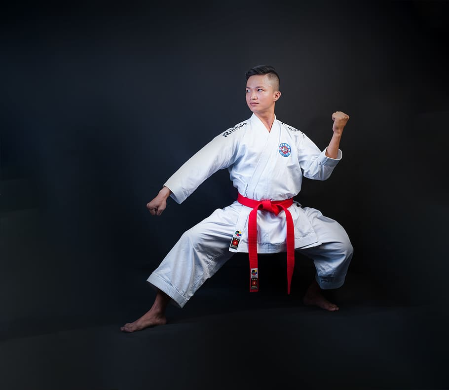
Karate is a traditional martial art focusing on strikes and blocks. It builds discipline and strong character. Students learn powerful punches and kicks. It improves balance and coordination. Training enhances mental focus. Karate develops self-confidence. It teaches respect and humility. Students gain physical strength. It prepares for self-defense. Karate promotes a healthy lifestyle.
Kung Fu is an ancient Chinese martial art. It focuses on fluid movements and techniques. It improves flexibility and agility. Students learn animal-style techniques. It builds inner peace and balance. Kung Fu enhances endurance. It teaches breathing control. Students gain mental clarity. It develops discipline and focus. Kung Fu is both art and self-defense.
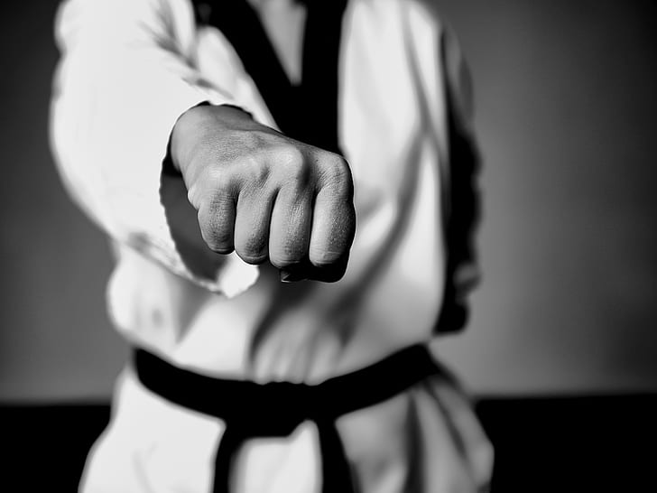
Taekwondo is known for high and fast kicks. It improves speed and power. Students gain strong leg techniques. It builds confidence and courage. Training enhances stamina. It teaches discipline and respect. Students learn self-defense skills. It improves flexibility. It develops quick reflexes. Taekwondo is an Olympic sport.
Grand Master Dr. T. Gopi Krishna Grand Master Dr. T. Gopi Krishna is a highly respected martial arts expert with over 26 years of experience in training students. He has successfully trained thousands of students and continues to inspire them through his dedication and passion for martial arts. He strongly focuses on discipline, character building, and personal development. He is well known for his commitment to excellence and his contributions to district, state, national, and international competitions. Beyond martial arts, he is actively involved in social service activities, encouraging students to become responsible citizens and good human beings. He believes in shaping not only strong fighters but also individuals with values, respect, and integrity. Under his guidance, students regularly participate and achieve success in district and state-level competitions, as well as higher-level championships. They develop strong character, confidence, fitness, and self-defense skills. His leadership has inspired many young athletes to achieve success in their martial arts journey. He continues to promote and spread martial arts knowledge with great enthusiasm. Positions Held: Founder, Director & Chief Examiner – KMAA Vice President – TASMO General Secretary – KMASA
Former & Director - KMAA
Vice President - TASMO
General Secretary - KMASA
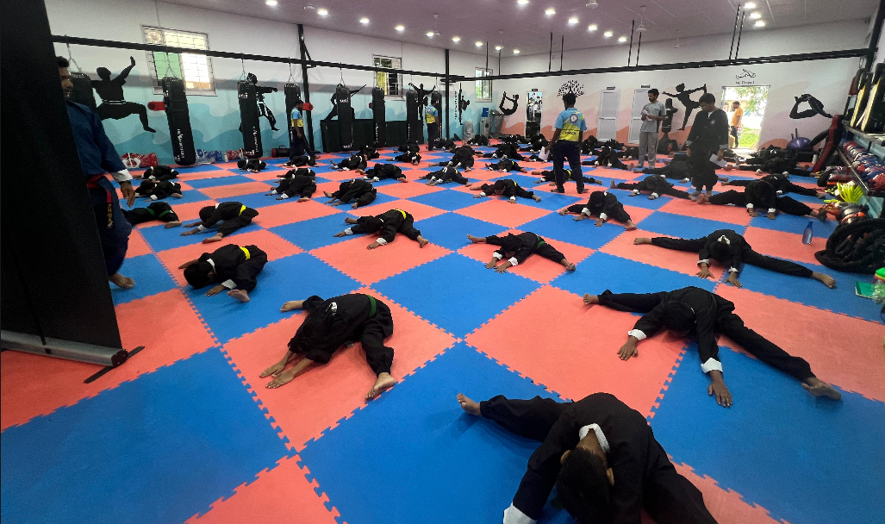
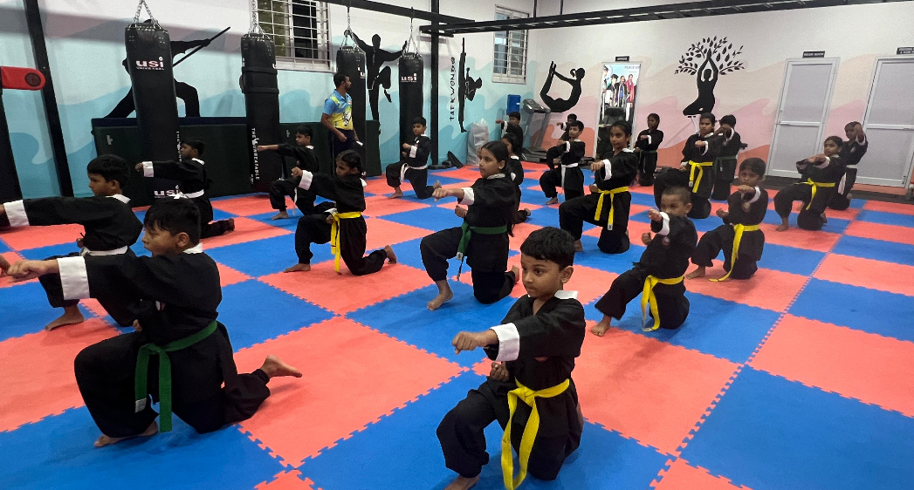
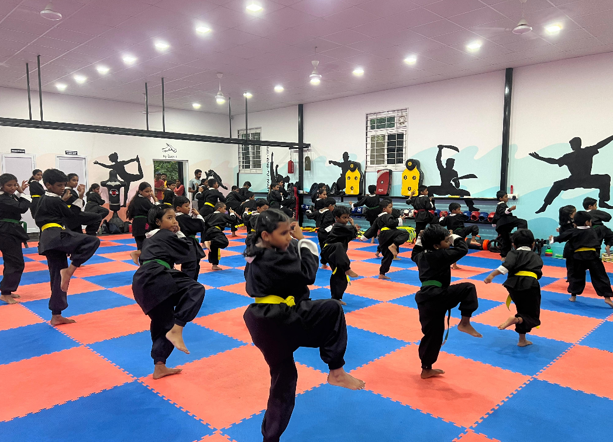
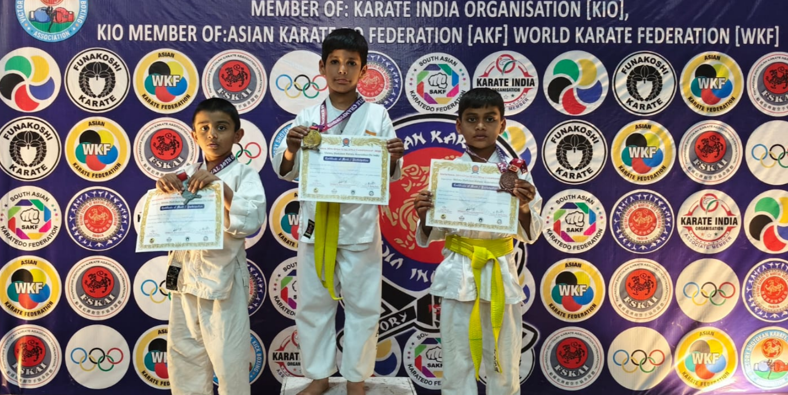
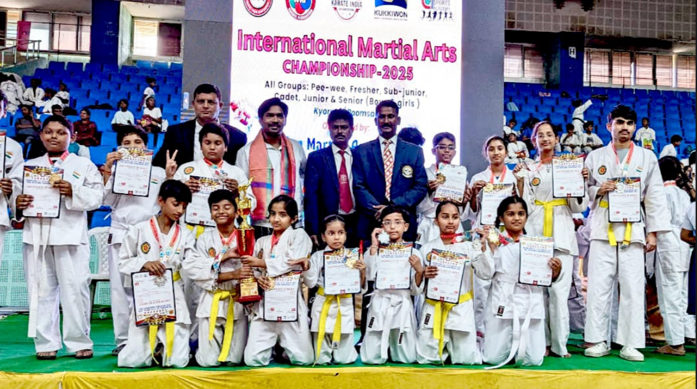
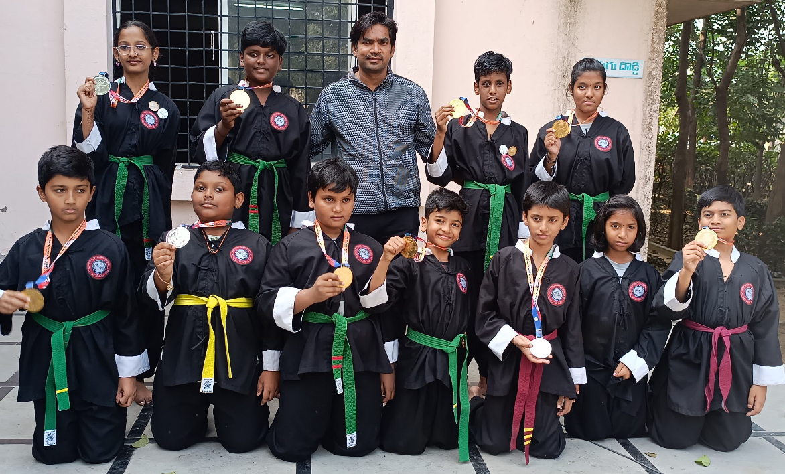
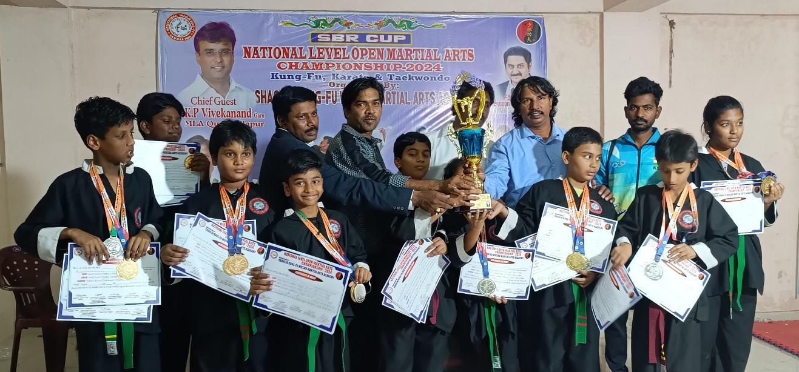
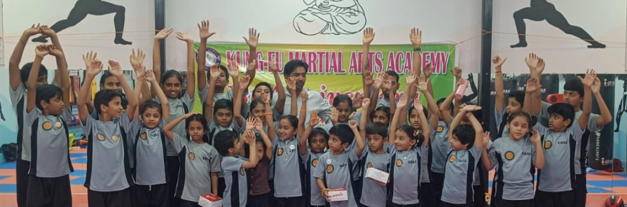
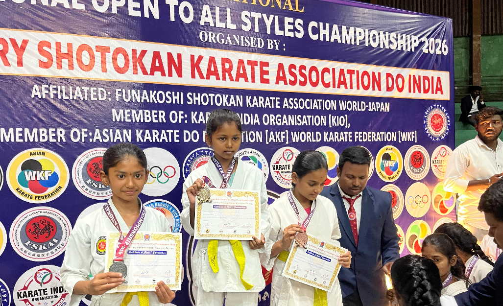
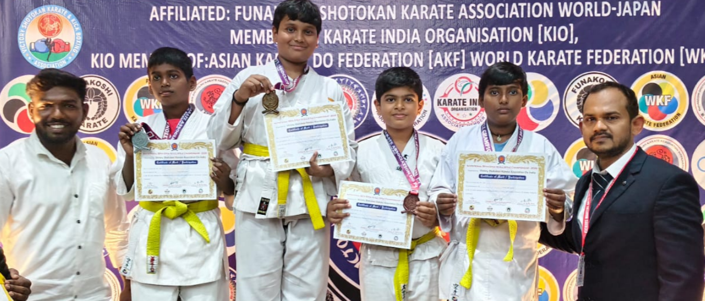
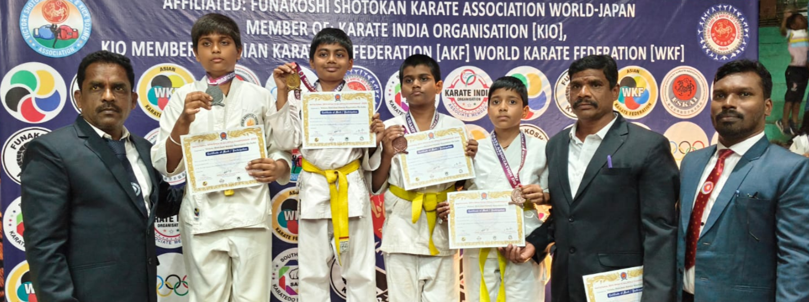
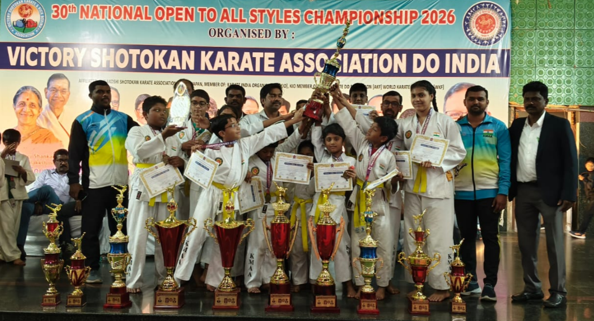
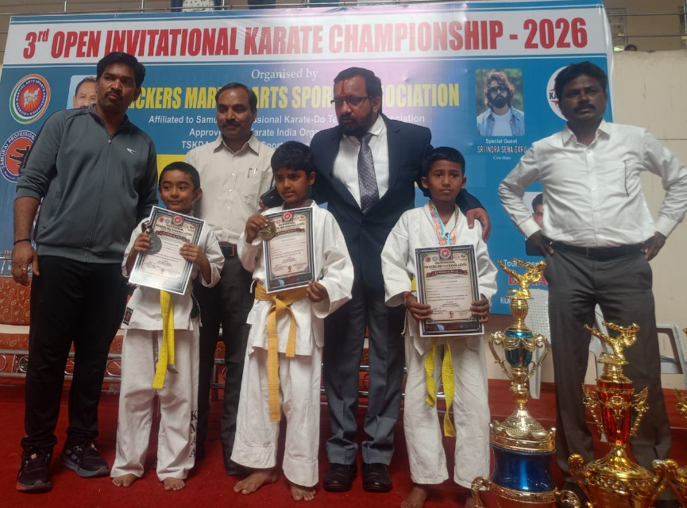
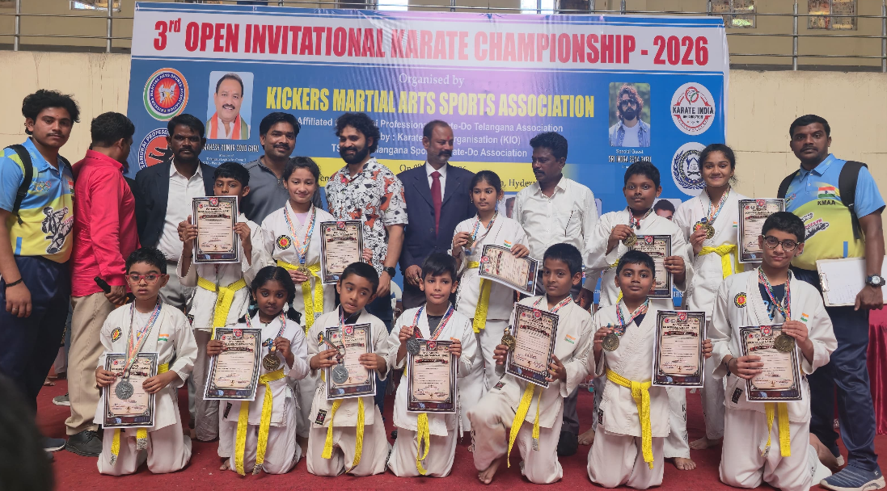
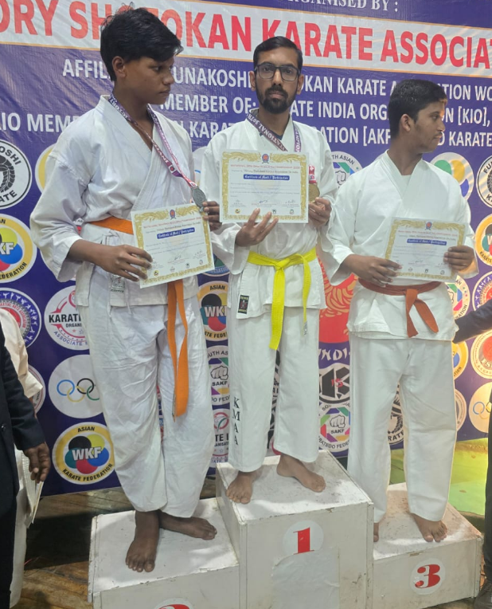
Builds confidence and self-esteem. Improves physical fitness. Enhances discipline. Teaches respect for others. Develops focus and concentration. Improves mental health. Builds leadership skills. Encourages teamwork. Teaches self-defense. Improves flexibility. Boosts stamina. Enhances reflexes. Develops patience. Promotes healthy lifestyle. Improves coordination. Builds courage. Teaches responsibility. Enhances awareness. Encourages positivity. Builds strong character.
Tournaments At Kung-Fu Martial Arts Academy, we take pride in training our students to participate in state, national, and international-level competitions. Our academy regularly conducts and participates in various tournaments to provide maximum exposure and competitive experience. Our students have achieved outstanding success by winning medals, certificates, and accolades in multiple championships. With expert coaching and continuous practice, they develop advanced techniques, mental strength, and confidence to excel at higher levels. Competitions play a key role in shaping a student’s martial arts journey. They enhance performance, build discipline, and teach valuable life skills such as sportsmanship, focus, and perseverance. Benefits of Participation Builds confidence and self-discipline Enhances technical and performance skills Provides competitive exposure Boosts motivation and focus Encourages sportsmanship and respect Opens doors to higher-level opportunities and recognition
Builds confidence. Improves skills. Gives exposure. Boosts motivation. Creates opportunities.
At Kung-Fu Martial Arts Academy, we prioritize the health, safety, and well-being of all our students. We maintain clean and well-organized training areas, and all equipment is sanitized regularly. Students are encouraged to follow proper hygiene practices at all times. Our academy is equipped with CCTV surveillance cameras to ensure continuous safety and monitoring within the premises. All classes are conducted under proper supervision by experienced instructors. We follow strict safety procedures after class. Students are allowed to leave the premises only with their parents or authorized guardians. If parents are delayed, children will be kept safely inside the academy and will not be sent outside alone. We also guide students on road safety, including how to cross the road properly. Our staff ensures that children exit the premises safely. Additionally, we educate students about personal safety. They are strictly instructed not to accept chocolates, biscuits, or anything from unknown persons. We regularly remind them to stay alert and be cautious around strangers. First aid facilities are available, and clean drinking water is provided. We maintain strict discipline and a safe, healthy, and supportive training environment for every student.
Mobile: 7981366211, 9849458772
Address: GLR St, Huda Complex, Mayuri Nagar, Nizampet, Hyderabad, Telangana 500049
Branches: Nizampet & Mallampet
Near H945+WGX Kung-Fu Martial Arts Academy, Mallampet, Hyderabad, Telangana 500118